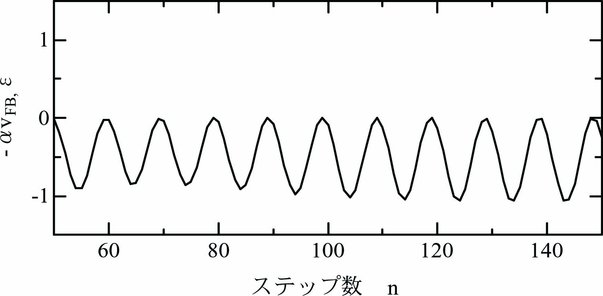
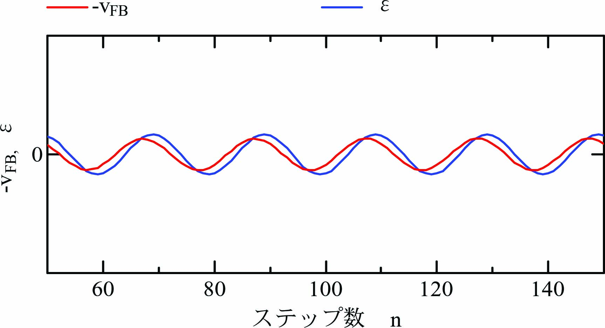
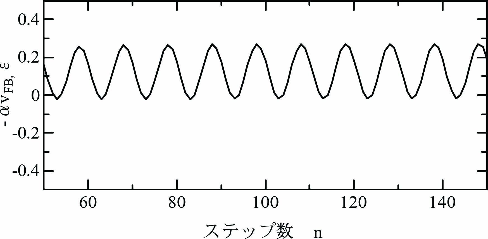
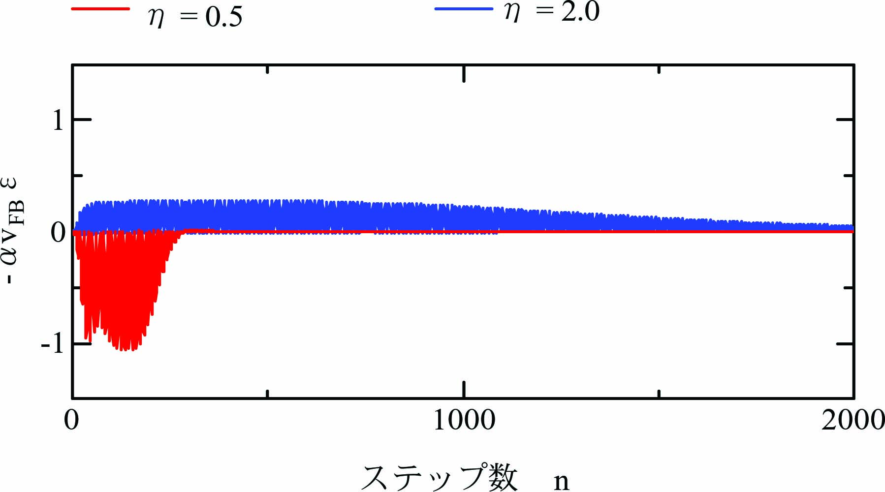

モデル規範適応制御の数値解析(数値実験) では超安定論から導いた適応制御則が有効に動作することを確認しています。 ここではどのようなメカニズムで適応制御が実現されるのかを確認します。
適応制御対象：
\begin{align} \ddot x + a\frac{\eta}{\hat\eta}\dot x + b\frac{\eta}{\hat\eta}(x - u) = 0 \label{eq:SysEqn2} \end{align}ここに、\(x_M\)は制御対象の変位です。係数\(a=25.12\)、\(b=3943\)です。
規範モデル：
\begin{align} \ddot x_M + a\dot x_M + b(x_M - u)= 0 \label{eq:MdlEqn} \end{align}ここに、\(x_M\)は規範モデルの変位です。
\begin{align} v_{FB} = -a\dot x - b(x - u) \label{eq:vFB} \end{align}適応制御則：
\begin{align} \dot{\hat{\eta}} = -\alpha \frac{v_{FB}}{\hat\eta}\varepsilon\label{eq:AdaptRule} \end{align} \begin{align} \varepsilon = e + c\dot e,~~~e = x_M - x,~~~c = \frac{2}{25.12} . \label{eq:ExdEqn} \end{align}\(\eta=0.5.2.0\)の場合について\(v_{FB}\)と\(\varepsilon\)の動作を観察します。
まず、下図は\(\eta=0.5\)の場合について\(-v_{FB}\)と\(\varepsilon\)を描画したグラフです。 振幅は比較できるように調整しています。 \(-v_{FB}\)と\(\varepsilon\)の位相がかなり揃っていることを確認できます。

下図は\(-v_{FB}\)と\(\varepsilon\)の積\(-v_{FB}\varepsilon\)を描画したグラフです。 \(-v_{FB}\)と\(\varepsilon\)の位相が揃っているので、 \(-v_{FB}\varepsilon\)はマイナス側(下側)にシフトしています。 すなわち、式\eqref{eq:AdaptRule}で表される\(\eta\)の時間増分\(\dot{\hat{\eta}} < 0\)となっています。
まず、下図は\(\eta=2.0\)の場合について\(-v_{FB}\)と\(\varepsilon\)を描画したグラフです。 振幅は比較できるように調整しています。 \(-v_{FB}\)と\(\varepsilon\)の位相がかなりずれていることを確認できます。
下図は\(-v_{FB}\)と\(\varepsilon\)の積\(-v_{FB}\varepsilon\)を描画したグラフです。 \(-v_{FB}\)と\(\varepsilon\)の位相がずれているので、 \(-v_{FB}\varepsilon\)はプラス側(上側)にシフトしています。 すなわち、式\eqref{eq:AdaptRule}で表される\(\eta\)の時間増分\(\dot{\hat{\eta}} > 0\)となっています。
下図は\(\eta=0.5\)と\(\eta=2.0\)の場合について積\(-v_{FB}\varepsilon\)を描画したグラフです。 \(\eta=0.5\)では\(-v_{FB}\varepsilon < 0\)となり、\(\eta\)の時間増分\(\dot \eta < 0\)、\(\eta=2.0\)では\(-v_{FB}\varepsilon >0\) 、\(\eta\)の時間増分\(\dot \eta > 0\)となっていることを確認できます。
\(\hat{\eta} > \eta\)の場合は\(\dot{\hat{\eta}}\)は負となり、 適応制御則\eqref{eq:AdaptRule}は\(\hat\eta\)を減少させるように動作します。 逆に\(\hat \eta < \eta\)の場合は\(\dot{\hat \eta}\)は正となり、 適応制御則\eqref{eq:AdaptRule}は\(\hat\eta\)を増加させるように動作します。 すなわち、適応制御則は\(\hat\eta\)の増減に対してネガティブフィードバックとして作用します。